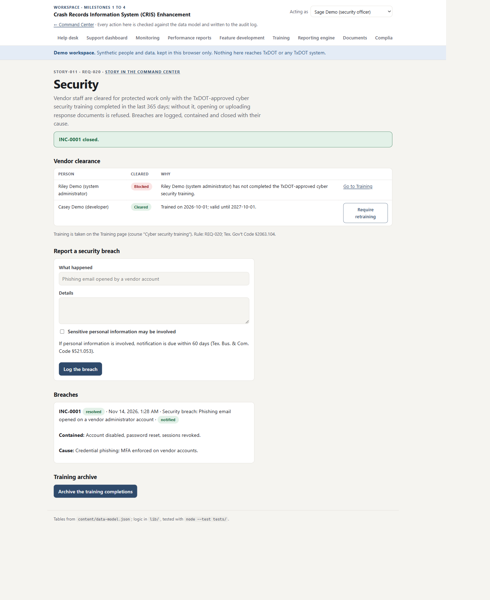
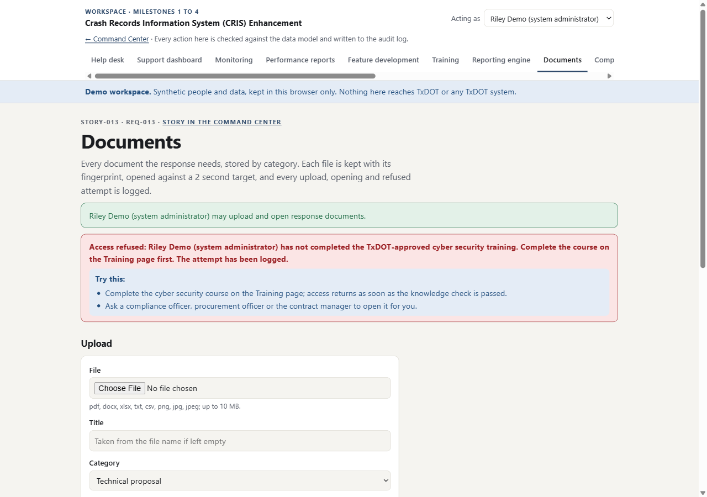
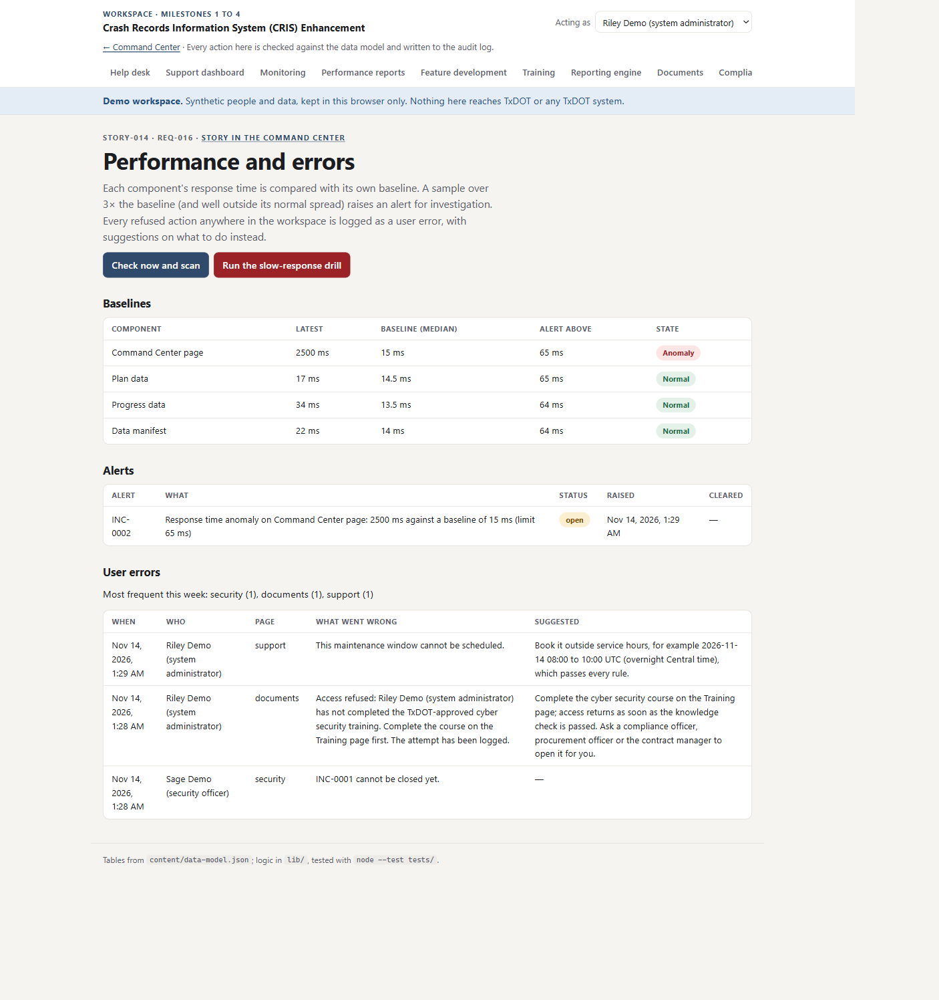
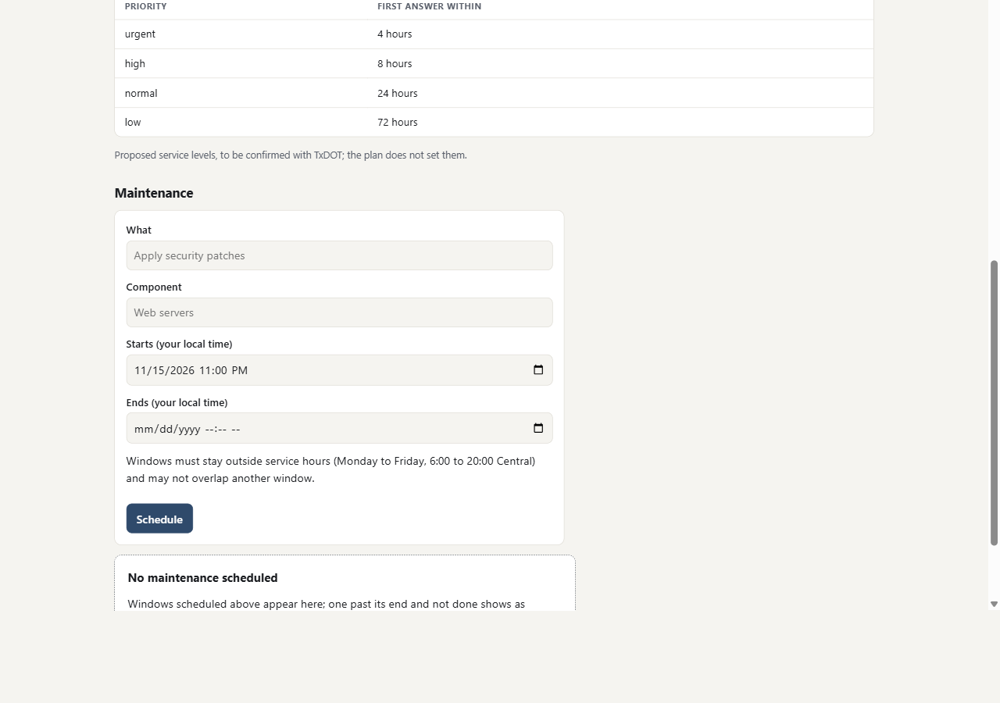
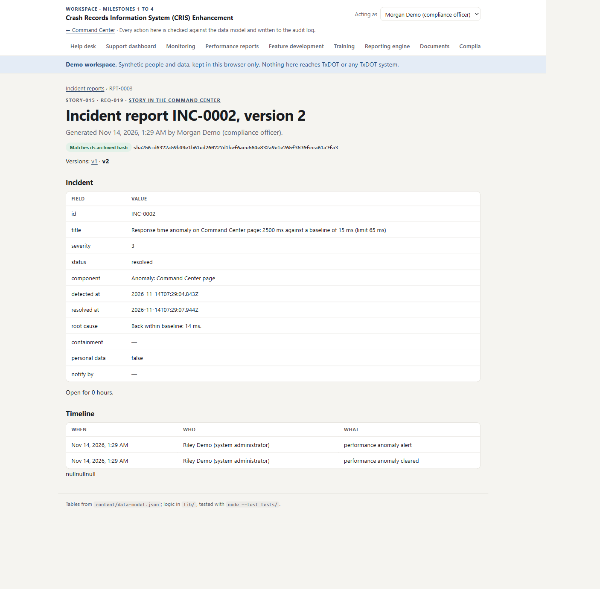
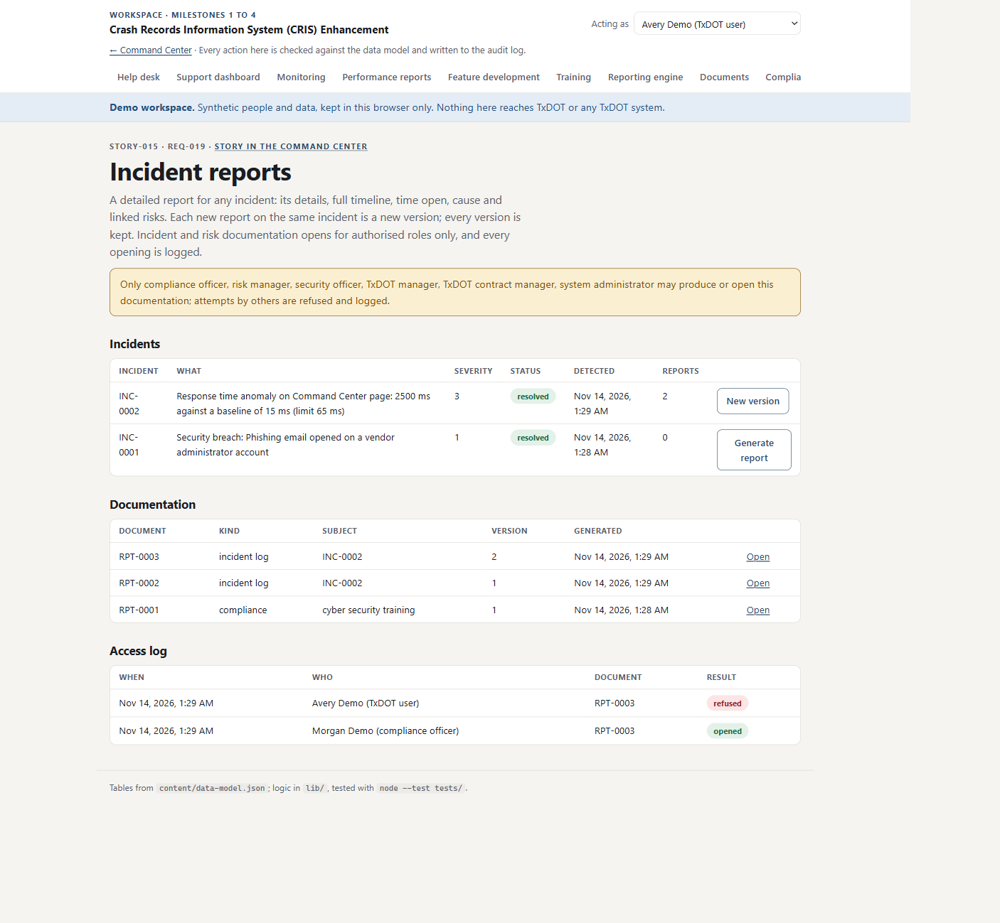

Arrow keys or the buttons move between slides. Everything shown was produced by the project on 10–11 November 2026; the workspace runs on synthetic people and data.
Milestone 4 · 14 November 2026
Three stories close Release 4. With them, every story in the TxDOT Crash Records plan is verified by the portal, each against the commit that built it.
The climb
Points after each milestone, from the portal's own record. M0 Command Center; M1 help desk to features; M2 training to compliance; M3 submissions to risk; M4 security to incident reports
STORY-011 · A breach

STORY-011 · Compliance enforced

STORY-014 · Anomalies

STORY-014 · User errors

STORY-015 · Incident reports

STORY-015 · Access

Scoreboard · 14 November
| Story | Commit | Tests | Portal |
|---|---|---|---|
| 011 Cybersecurity compliance | 341fd4c | 4 | Verified · 50 |
| 014 Performance and user error | 5a1a8d6 | 4 | Verified · 50 |
| 015 Incident reports | 15a6d44 | 3 | Verified · 50 |
Working in parallel
What comes next